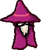

Bosses
Two fights, deliberately opposite. One asks you to read it; the other asks you to already be moving.
Both shrug off most knockback — 85% for the Sovereign, 88% for the Revenant. Until 23 September they only claimed to: the resistance was applied inside the boss's own damage handler, before the orb wrote its shove, so it never took effect, and every other push in the game bypassed it entirely. It now sits where every push goes through. A boss is also never pulled back toward you as a straggler, and neither boss counts toward Full Bestiary — they have achievements of their own.
The rotation
A boss arrives every tenth wave and the order is fixed, cycling through 2 of them:
| Wave | Boss | |
|---|---|---|
| 10, 30, … | DREAD SOVEREIGN | A siege engine. It walks, and the fight is read from a distance. |
| 20, 40, … | PALE REVENANT | The opposite fight, and the reason there are two. |
DREAD SOVEREIGN

Wave 10, and every 20th after
BossA siege engine. It moves at a walking pace and the whole fight is read from a distance — every attack announces itself long before it lands, and every one of them is survivable by moving.
| Move | What it does |
|---|---|
| Slam | A wide ground telegraph, then a shockwave. The radius and the wind-up are tuned together against one rule: running must work. From the edge of its own trigger range you can clear the circle on foot, without blink. |
| Bolt fan | A spread of oversized, slowed projectiles — more of them each phase. They are big and slow enough to walk between, which is the point: a fan is a movement puzzle, not a damage check. |
| Summon | Calls bodies out of the ground, more each phase. Shares one cooldown with the other two, so it never does two things at once. |
The telegraph lengths are the design. At over a second of wind-up, the Sovereign is asking you to read it. Compare the Revenant, which asks you to already be moving.
PALE REVENANT
Wave 20, and every 20th after
BossThe opposite fight, and the reason there are two. Nearly three times the Sovereign's speed, no ranged attack whatsoever, and every move a commitment it has to cross the floor to land.
| Move | What it does |
|---|---|
| Dash combo | Three, four, then five dashes in a row as phases fall, each with its own short wind-up and a gap between. The direction locks at the wind-up, so a combo is a sequence of dodges rather than one. |
| Leap | Goes airborne and comes down in a wide circle. The hitbox stays on the ground for the whole flight — only the sprite is lifted — so what you see and what hurts never disagree. |
| Forced leap | After two dash combos it must leap. Without that it would simply never do it at close range, which is exactly what the first build did until a state-coverage assertion caught it. |
Its speed is capped below the wizard's own, even at phase three, on purpose: kiting has to stay an answer, or the fight stops being about reading it and becomes a question about whether blink is up.